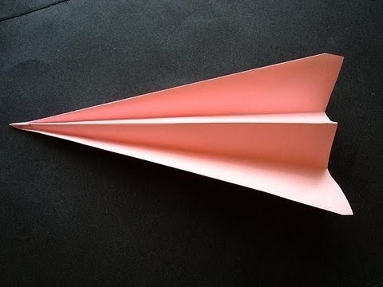

Pasos para hacer un avion de papel
- Dobla una hoja de papel por la mitad a lo largo
El mejor tipo de papel es una hoja de impresión de unos 20 cm (8 pulgadas y media) por 30 cm (11 pulgadas) o una hoja A4. Empieza con un doblez de libro. Hazlo doblando el papel por la mitad a lo largo.
- Puedes usar cualquier hoja de papel de aproximadamente 20 cm (8 pulgadas y media) por 30 cm (11 pulgadas), como la de un cuaderno, papel de construcción o papel de impresión.
- Para mejores resultados, extiende el papel sobre una superficie plana, como un escritorio.
- Presiona el doblez con el borde del dedo y, luego, desdobla.
- Dobla las dos esquinas superiores hacia abajo
Toma las dos esquinas del papel y dóblalas hasta que se junten en el doblez del medio. Tendrás dos solapas triangulares arriba de la parte rectangular del papel.
- El doblez central debe ser de valle, es decir, las puntas de los dobleces deben quedar hacia abajo y el papel debe elevarse hacia ti, como un valle.
- Marca los bordes diagonales externos de tus dobleces para que se mantengan en su lugar.
- Dobla las esquinas superiores hacia el doblez central.
Repite el mismo tipo de doblez que acabas de hacer. Dobla hacia adentro las puntas externas en la base de cada triángulo. Dóblalas hacia adentro.
- Ahora tendrás dos solapas en forma de triángulos isósceles hacia abajo. Un triángulo isósceles tiene dos lados de la misma longitud y un tercero de longitud distinta.
- Dobla el papel nuevamente por la mitad.
Toma el avión y dóblalo hacia atrás para formar un doblez de montaña.
- Este es un doblez estilo perro caliente, que debe hacerse en el pliegue central.
- Las solapas que doblaste antes deben quedar en la parte externa del avión.
- Dobla las alas
Coloca el avión en una posición que permita que la porción recta quede en la parte inferior. Dobla las alas para que queden alineadas con la base de tu avión.
- Dobla las alas para que la porción pequeña y plana en la parte trasera de cada una se alinee con la base del avión.
- Dobla las alas otra vez
La base de tu avión debe quedar plana y tener un borde plano en la parte superior, empezando aproximadamente en la mitad de la parte posterior. Dobla el papel para que se alinee con los bordes.
- Vuelve a doblar las solapas de las alas hacia abajo, sobre los dobleces anteriores, para alinear la porción plana que estaba en la parte superior de las alas con la base plana.
- La distancia desde la base de tu avión hasta la parte superior debe ser de unos 25 mm (1 pulgada).
- Presiona el doblez de las alas con el dedo.
- Abre las alas
Luego, jala las capas superficiales de los dobleces hacia arriba para desplegar las alas. Te quedarán dos alas grandes y planas en la parte superior, y dos alas más pequeñas debajo.
- Ahora, tu avión largo y angosto está listo para volar.
- ¡Lanza el avión!
Pruébalo haciendo un movimiento rápido de muñeca.
- Este avión es genial para vuelos largos y rectos.
- Sujétalo en paralelo al suelo y lánzalo. Puedes pegar la nariz del avión con cinta adhesiva para cerrarla y mantener las alas juntas.
